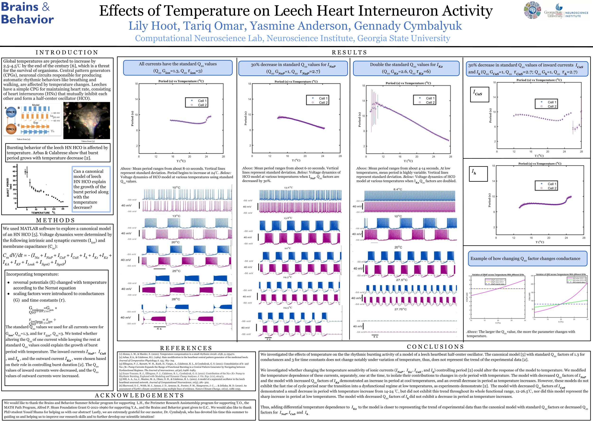

Nori is an intelligent pantry management application designed to simplify everyday cooking through artificial intelligence and real-time inventory tracking. Using a built-in smart camera, Nori uses image recognition to automatically identify and update pantry items as users add or remove them. It has a modern, customizable dashboard that provides users with a clear view of their food inventory and personalized meal ideas. By generating recipes based on available ingredients, Nori helps minimize food waste, promote cost-effective meal planning, and transforms how users interact with their kitchens, making cooking more efficient, sustainable, and enjoyable.
1. Nori
.jpg)
Have you ever opened your pantry, stared at the shelves, and still felt like there's nothing to eat? With Nori, you don't have to experience that again. Nori is an AI-powered pantry management app that uses a smart camera to recognize pantry items through image recognition and automatically update your inventory in real time. The app features a clean, customizable dashboard where users can switch between light and dark mode, check what they have on hand, and explore meal ideas. Nori's AI creates personalized recipes based on the ingredients in your pantry, helping you save money, reduce food waste, and make everyday cooking simpler and smarter.
2. Mechanisms underlying temperature dependence of the leech heart interneurons

Global warming presents a threat to the functionality of organisms, especially ectotherms, whose body temperature changes based on the external environment. Alonso & Marder (2020) investigated the adaptability of small neural circuits in crustaceans to different temperatures, and established that functional robustness during external temperature change was due to transitions between different rhythm-generating mechanisms. For instance, the hyperpolarization-activated current (Ih) is implicated in such transitions (Schapiro et al., 2024). The goal of our study is to analyze mechanisms of adaptability of a leech heartbeat half-center oscillator (HCO) consisting of two heart interneurons (HNs) that govern heartbeat. Arbas and Calabrese (1984) investigated the dependence of the HCO cycle period on temperature. They found that gradual temperature decrease resulted in an increased period. For example, the mean period from 20 °C to 12 °C increased from 9.7 seconds to 21.7 seconds. To determine the underlying mechanisms, first, we incorporated Q10 temperature scaling factors in the canonical HCO model (Hill et al., 2001). These obtained results demonstrated a trend that was opposite to Arbas and Calabrese’s findings (1984). Next, we modified the Q10 scaling factors of conductance and time constants for intrinsic currents one at a time: persistent sodium (INaP), persistent potassium (IK2), and Ih currents (Hill et al., 2001). For example, we found that either decreasing the temperature-sensitivity of INaP conductance or increasing the temperature-sensitivity of IK2 conductance caused the model to match the trend of the experimental data. These results will lay the foundation for future work focusing on adaptability to global warming.
3. Software Development Final Report
Software designed for the Employee Management System, developed to address the requirements of a small-scale company (Company ’Z’) with less than 20 employees. The document provides a comprehensive description of the system architecture, data design, components, and user interaction mechanisms. It serves as a blueprint for developers to implement the system, testers to validate its functionality, and stakeholders to understand its features.